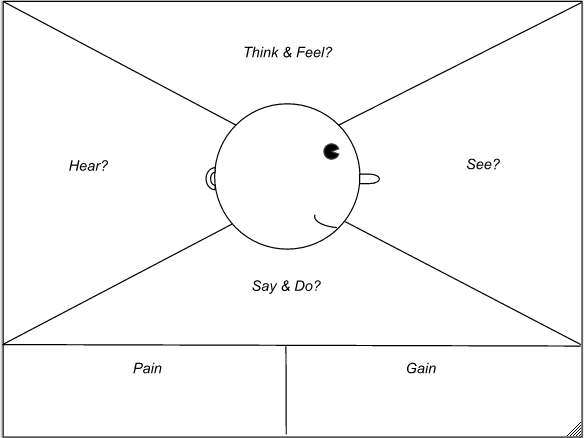
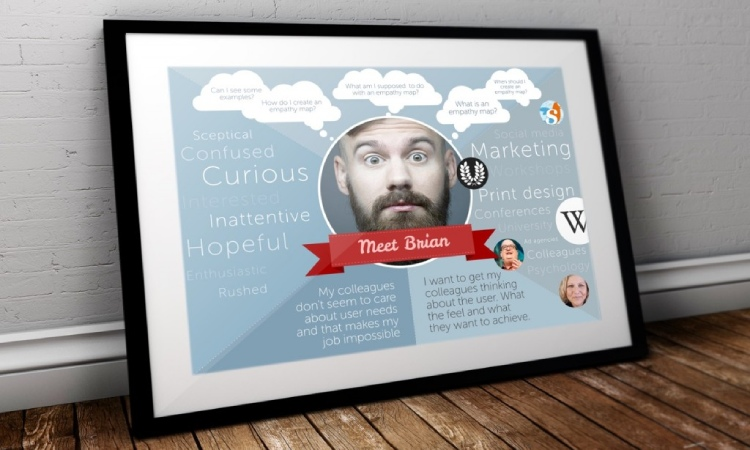

What is Customer Empathy Mapping & Why Is It Important?
In an effort to share more stories from more people who’ve done it before, I’m excited to bring you a guest post from Freshdesk, a product by Freshworks, an online cloud-based customer service software providing helpdesk support with all smart automations to get things done faster. For more stories like this, check out our tips on how to reduce churn and define your customers.
Learn more about how Influx can help your customer support operations with Support as a Service.
Empathy is a familiar term in customer service. Every day customer service employees step into the shoes of the customers they serve in order to better appreciate what their customers might be feeling. By understanding the context of why a customer is frustrated, or why they might be asking for a specific feature, we can provide better customer service.
Empathy brings us closer to our customers - in fact, empathy helps us to imagine ourselves (or our close friends) in our customers’ situation. As Jeanne Bliss raises in her latest book “Would you do that to your mother?” humans are much kinder to people they feel close to, or bonded with. Practicing empathy creates these bonds with the customer we’re helping.
Most employees only think of empathy when they are dealing directly with a customer. They put on their empathy hats when a customer is frustrated and they want to see eye-to-eye.
But it’s possible to deploy empathy as a more formal strategy across your customer service department. By bringing empathy into every decision and every touchpoint between customer and company, you can create a more customer-centric experience.
In order to do so, you need to create an empathy map.
What is an empathy map?
An empathy map is a visual representation of what your customer is feeling and experiencing, including their motivation, their pain points and their goals. It might represent a segment of users or a specific customer persona. It’s designed to get you into the head of the customer to better understand where they are coming from.
You can see a common empathy map diagram below. This version was created by Dave Gray and has become popular with UX professionals (but it’s really helpful for anyone that needs to dive into a user’s environment).

Most empathy maps include five or six areas:
- Think & Feel: What’s going on inside the mind of your customer?
- Say & Do: What are common things this customer might do or speak about? These actions might often be how you identify this particular user segment.
- See: What’s around them in their environment?
- Hear: What might other people be saying to this user? Are they being asked questions? Are they being told to deliver on something specific?
- Pains: What problems or obstacles does this user experience? (ie. not technically savvy, or budget conscious).
- Gains: What goals or opportunities is this user looking to achieve? (ie. improving their overall fitness, connecting with family members, or convincing their boss that they are doing a good job)
What is a customer empathy map?
Ultimately, empathy maps take everything that you might be considering when you’re responding to a user and put them into a more formal, recyclable format that you can use repeatedly for decision making. Therefore, a customer empathy map takes the consumer into account when forming these responses.
How does an empathy map help improve customer support?
As we’ve mentioned above, empathy is a critical skill for customer service reps. We use it every day to connect with customers on a human level.
But in order to empathize, you need to know your customer inside and out.
When we’re interacting with users on the fly, we often make assumptions on where they are coming from based on our own past experiences.
This is a fundamentally flawed method of empathizing because it relies only on our own perspective - we never actually validate that we’ve accurately identified the feelings of the customer, which creates misunderstandings and breakdowns in communication.
For example, You may think a customer is really upset about the cost of the product, but really, they are more worried about how they will appear to their boss when they spend money on something that doesn’t get results.
As humans, we’re inclined to project our own experiences onto the people around this. But that’s not always accurate.
An empathy map crystalizes and confirms your picture of a customer and provides a lens you can view every customer-facing decision with.
How to create an empathy map
Creating an empathy map is a great activity to do as a group because it brings everyone together around a central idea of the customer.
To run an empathy map exercise, you’ll need at least 1 hour of dedicated time, some post-it-notes and a white board.
Get everyone in the same room
If you’re remote, get everyone on the same call. Bring some snacks, and make it a comfortable room to be in.
Decide the type of customer you’d like to empathy map
By focusing on one segment of customers you can be more specific and detailed about what life is truly like for them. Your product team might already have user personas that could be helpful to build empathy maps for, in order to align with the product teams’ vocabulary.
Create a list of questions you’d like to consider
Write ideas about what a customer Thinks/Feels/Sees/Hears/etc on the post-it-notes.
Add post-its to the relevant map sections
Ask each member of the team to place their post-it-notes on the board one at a time and explain their thoughts.
Wrap up, summarize and identify any formed hypotheses that need confirmation.
Rather than make assumptions, see if you can confirm what customers actually feel about a certain situation. For example - what do your international customers actually think about a new support channel?
Some people may have different opinions of what the customer actually feels. Talk through these differences and use examples of past customer interactions to validate opinions.Not all customers are motivated by exactly the same things, and that’s okay too.
Once you’ve completed the exercise, everyone on the team should be able to recognize your user persona and have some concrete takeaways of how this customer might react to certain phrases and responses.
Are there ways that your team can better serve this customer, now that you’ve stepped inside their head?
Purpose of empathy map?
A key to successful customer service is understanding people - which means getting inside their heads to know exactly where they’re coming from. The creation of an empathy map is the first step in understanding customers and improving their experience.
How to use empathy map
While the act of creating an empathy map is helpful in itself, there’s a lot more value you can get from the time you’ve spent putting it together.
New strategy planning
Before making decisions around sticky customer support situations or implementing a new strategy, run potential solutions or communication strategies through your empathy map - does it resonate with your users?
For example, say your company has decided to increase prices for a monthly subscription plan. Using your empathy map, consider how each group of customers will feel about the increase. Where are they likely to see the news about the increase first? What questions might they have? Who will they need to have the increase approved by? Is there anything you can do to make the transition easier for them?
Templated responses
If you’re creating macros or canned responses, empathy maps can be a gut check of whether the canned response is appropriate in every situation. By comparing what the customer feels, thinks and experiences with the tone in the canned response, you can ensure you’re hitting the right note.
For example, if a customer is technically challenged and you’re sending them API connection instructions, you’ll end up with a confused and frustrated customer.
Training new team members
You can also use the empathy map as a training tool with new team members to get them in the mindset of your customer base. Walking through how your customers think, feel and act can help new members create responses that are sensitive to the needs of your customers.
Physical reminder
Finally, print out your empathy map and hang it up in the office if you all work in the same space. It can serve as a great reminder of the importance of empathy in customer service.
Every time a customer writes in frustrated and angry, and it’s difficult to identify with the emotions they are feeling, take a peek up at the empathy map and remind yourself why they might feel that way.

Benefits of empathy mapping
Empathy mapping helps organize customer insights, align customer service department goals and values, creates a more customer-centric experience, and ensures satisfied customers who then become brand champions.
How many empathy maps should you create?
The number of empathy maps created varies depending on the business. You can build empathy maps based on the different products/services for your business or based on different customer personas. It’s up to you to decide what works best for your business.
Why empathy mapping is important
It’s important to understand your customers’ preferences and behavior so you can create an amazing experience for them. Customer empathy mapping is an effective technique that helps understand customers, and helps guide each stage of the customer journey.
Conclusion
Much like a customer journey map, empathy maps illuminate your customer’s experience with your brand. It puts your team into the head of your customer, making it easier to understand where they are coming from and what they want.
The most important thing to remember about empathy maps is that they shouldn’t just be created and sit in a drawer. Use the insights you’ve gained from the process to build closer relationships with your customers.
Create your empathy map today and keep it at the center of customer-facing decisions to improve your customer’s happiness and make better, more customer-driven choices.